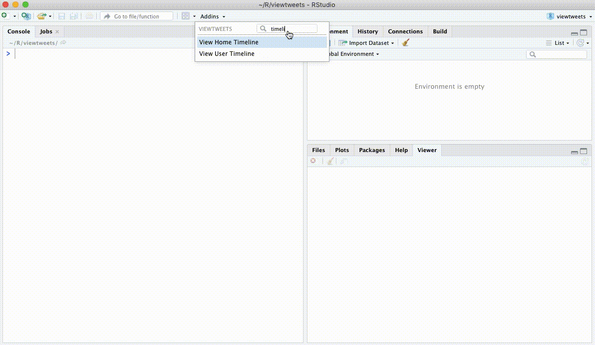
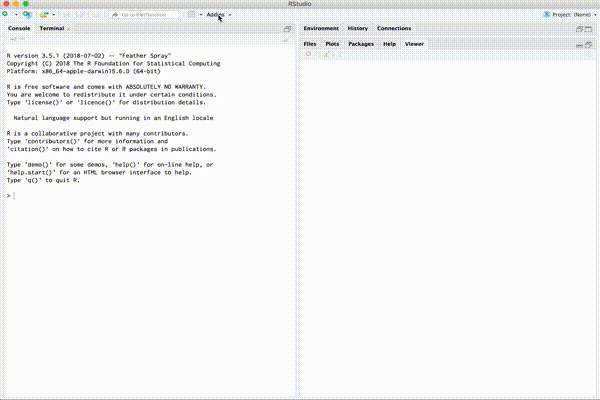

View Twitter timelines in Rstudio.
Install the development version from Github with:
## install remotes pkg if not already if (!requireNamespace("remotes")) { install.packages("remotes") } ## install from github remotes::install_github("mkearney/viewtweets")
View home (authenticating user’s) timeline:

View tweets posted by a given user:
Search Twitter and view matching results:
